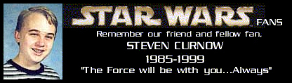

For those of you who don't recognize his name, Steven Curnow was one of the many students tragically struck down at the Columbine High School in Littleton, Colorado on April 20th, 1999.
After learning that Steven was a huge Star Wars fan, anxiously awaiting Episode 1, we at Countingdown.com chose to honor his memory by wearing white ribbions while waiting on line.
Below are links to two more ways of remembering him...
This first one is a petition to have Steven's name put on a Decipher Star Wars card.
Autograph Central: Steven Curnow - Decipher Card Memorial
The second is a site asking that you buy an extra ticket and give it to someone around the same age Steven was. Here is the link:
The Latest Scoop - Ticket Stub Collection
If you don't wish to buy an extra ticket...sign the petition!!
Please send donations to the memorial fund established in Steven's memory below:
Steven R. Curnow Memorial Fund
c/o First Bank
Box 2297; Littleton, CO 80123
Special thanks to Paul for bringing this to our attention!